CURRÍCULUM VITAE
Email: 📧 laiaperis3@gmail.com | LinkedIn: Laia Peris Arantzamendi | Portfolio: laiape.github.io
EXPERIENCIA RELEVANTE
DAVI - TFG UNIVERSIDAD
Septiembre 2024 – Mayo 2025 | Barcelona
- Colaboradora en skinning facial y corporal del personaje principal.
HERRAMIENTA AUTOMÁTICA DE RIGGING
Proyecto Personal
- Optimización de rigs existentes para proyectos personales.
- Scripting para tareas repetitivas de setup de bípedos y cuadrúpedos.
EDUCACIÓN
GRADE IN 3D ANIMATION AND VFX
La Salle Ramon Llull (URL) | 2022 – 2026 | Barcelona
GRADE IN MULTIMEDIA ENGINEERING
La Salle Ramon Llull (URL) | 2021 – 2022 | Barcelona
HABILIDADES TÉCNICAS
SOFTWARE: Autodesk Maya, Visual Studio
LENGUAJES: Maya Python (Avanzado), Maya API (Básico), PyQt (Básico)
SISTEMAS: Rigging Facial/Corporal, Deformadores, Músculos y Piel, Rigs Modulares
VERSIONADO: Git/GitHub
SKILLS
- Programming
- Version Control Systems
- Problem solving
- Critical thinking
- Team collaboration
LANGUAGE SKILLS
- Basque (native)
- Catalan (native)
- Spanish (native)
- English (Fluent)